OpenAPI(Swagger) 스펙을 탐색하고 API 요청을 실행하는 데스크톱 앱.
로컬 claude CLI 기반 AI 어시스턴트를 내장했습니다.
SwaggerMan(스웨거맨)은 OpenAPI(Swagger) 명세를 불러와 API를 한눈에 탐색하고, 실제 요청을 보내 응답을 확인하는 크로스플랫폼 데스크톱 앱입니다. macOS(Apple Silicon)와 Windows를 지원하며, Tauri 2 · React · TypeScript로 만들어졌습니다.
이 앱의 가장 큰 차별점은 로컬에 설치된 claude CLI와 연동되는
AI 어시스턴트(✦ AI)입니다.
현재 보고 있는 엔드포인트를 컨텍스트로 한국어 대화를 나누고, 자연어로 요청 폼을
자동으로 채우거나 응답을 설명·진단받을 수 있습니다.
이런 분께 유용합니다.
이 매뉴얼의 스크린샷에는 1 2 같은 빨간 번호가 표시되어 있고, 본문 설명이 그 번호와 1:1로 대응합니다.
설치 파일은 GitHub Releases 페이지에서 운영체제에 맞게 내려받습니다.
.dmg 파일을 내려받아 엽니다.첫 실행 시 “손상되어 열 수 없습니다” 또는 “개발자를 확인할 수 없습니다”가 뜰 수 있습니다(서명 미인증 앱). 우클릭 → 열기로 안 되면 터미널에서 아래를 실행한 뒤 다시 여세요.
xattr -dr com.apple.quarantine /Applications/SwaggerMan.app.exe — 설치형 인스톨러(NSIS). 실행 후 안내에 따라 설치합니다.다운로드 시 SmartScreen 경고(“Windows의 PC를 보호했습니다”)가 뜨면 추가 정보 → 실행을 누르세요(터미널 작업 불필요).
설치 후 시작 메뉴에서 SwaggerMan을 실행할 수 있습니다.
SwaggerMan의 화면은 크게 다섯 영역으로 나뉩니다.
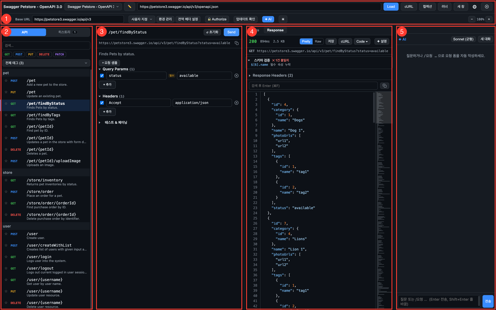
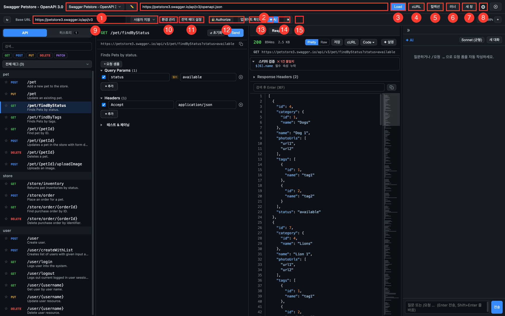
https://api.example.com/v3/api-docs)…/swagger-ui/index.html)를 넣으면 스펙을 자동 탐색합니다.불러온 스펙은 프로젝트로 자동 저장됩니다. 즐겨찾기·히스토리·인증·환경·샘플이 모두 프로젝트별로 보관되며, 앱을 재시작하면 마지막 프로젝트와 마지막으로 보던 API·입력값이 그대로 복원됩니다.
사내 CA·자체 서명 인증서 서버의 스펙이 error sending request로
안 열리면, 설정(⚙) → “SSL 인증서 검증 무시”를 켠 뒤 다시 Load 하세요.
(요청 실행·OAuth2 토큰 발급에도 동일하게 적용됩니다.)
상단바 ✏️(1)를 누르면 저장된 프로젝트를 한곳에서 관리하는 모달이 열립니다.
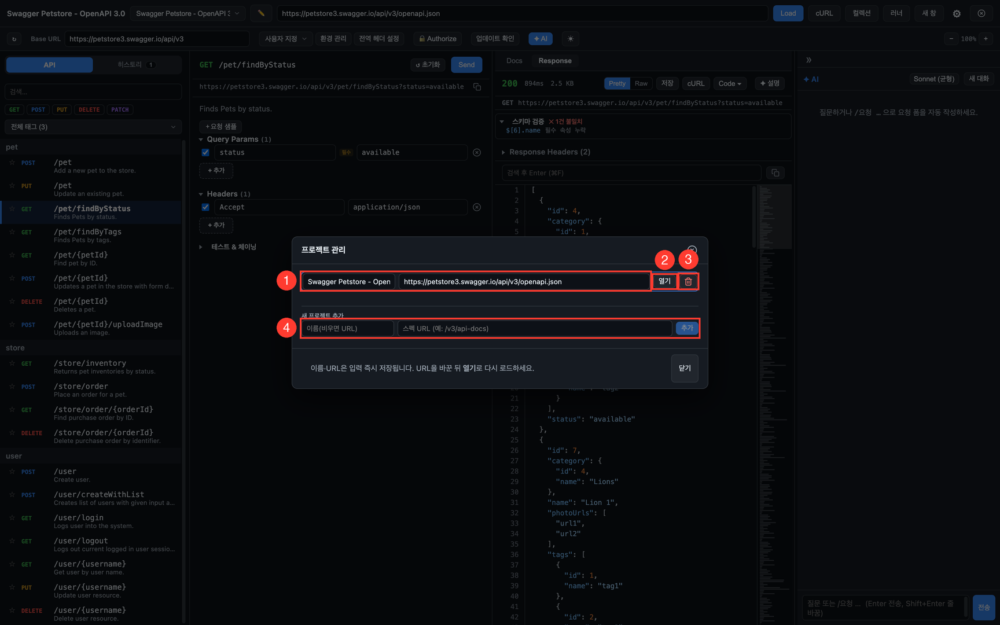
상단바 새 창(7) 또는 ⌘N으로 창을 여러 개 열 수 있습니다. 창마다 다른 프로젝트를 선택해 여러 API를 동시에 볼 때 유용합니다. 창 생성이 실패하면 원인이 상단바에 표시됩니다.
사이드바에서 엔드포인트를 선택하면 요청 편집기가 열립니다. 스펙에 정의된 파라미터는 입력 칸이 자동으로 만들어지고, 예시 값(example/default/enum)이 미리 채워집니다.
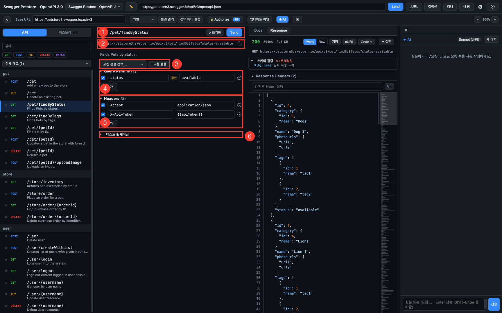
{{변수}}를 쓰면 전송 시
현재 환경의 값으로 치환됩니다. (스크린샷의 {{apiToken}} 참고)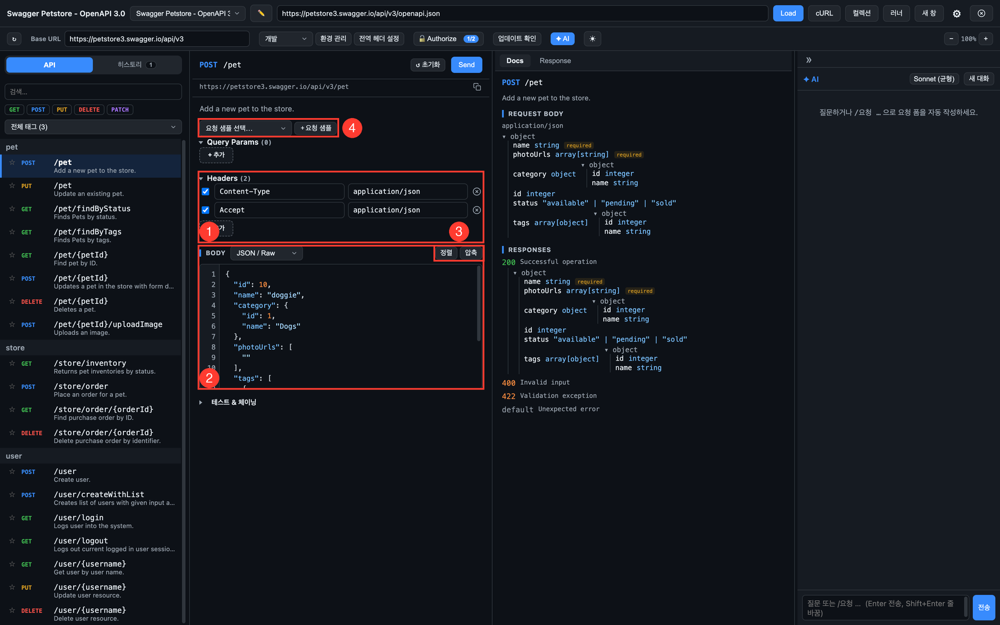
Content-Type이 자동으로 추가됩니다.form-urlencoded·multipart/form-data(파일 업로드)도 지원합니다.상단바 cURL(4) 버튼에 cURL 명령을 붙여넣으면 메서드·URL·헤더·Body가 분석되어 요청으로 만들어집니다. 다른 도구나 문서에 있는 요청을 빠르게 재현할 때 씁니다.
전송 전 사전 검증 — 필수 path/query/body가 비어 있으면 전송 전에 경고를 표시해 실수를 막아 줍니다.
요청을 보내면 우측 패널의 Response 탭에 결과가 나타납니다.
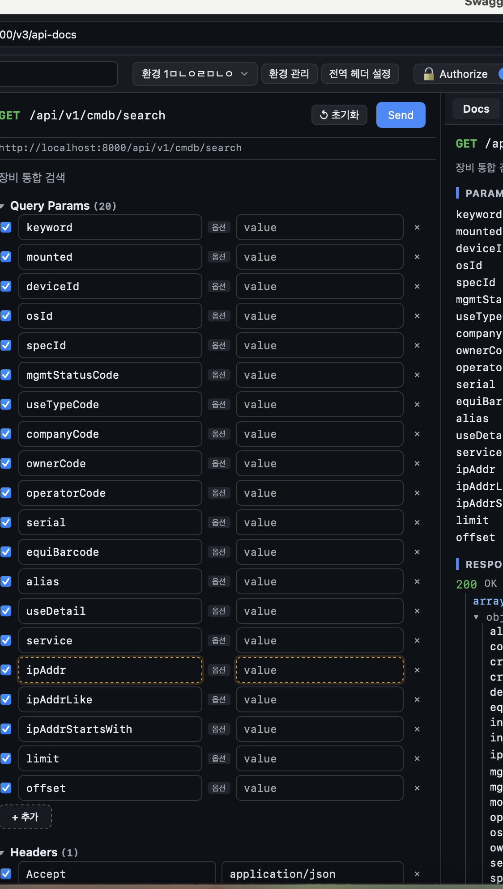
같은 패널의 Docs 탭에서는 선택한 엔드포인트의 스펙 문서를 봅니다.
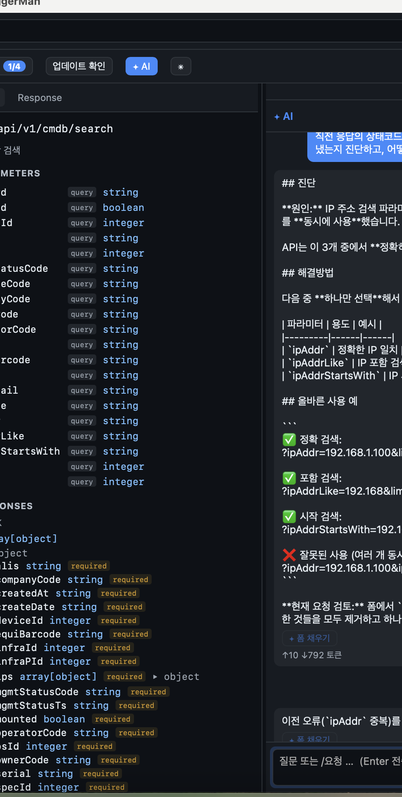
"available" | "pending" | "sold")도 표시됩니다.스펙에 보안 스킴(security scheme)이 정의되어 있으면 상단바의 Authorize(12) 버튼으로 토큰을 설정합니다. 적용된 토큰은 요청을 보낼 때 자동으로 헤더에 포함됩니다.
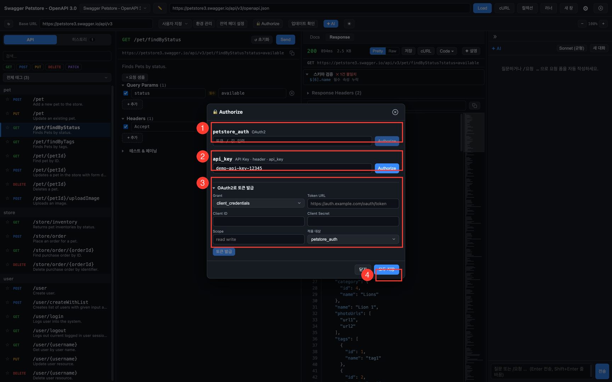
Bearer/Basic/API Key 등 스킴 종류에 맞는 헤더(Authorization: Bearer …,
api_key: … 등)가 자동으로 구성됩니다. 상단바 Authorize 버튼에 적용 개수(예: 1/2)가 표시됩니다.
개발·스테이징·운영처럼 서버를 오가며 테스트할 때는 환경을 만들어 두고 상단바에서 전환하세요. 환경마다 Base URL과 변수를 가질 수 있습니다.
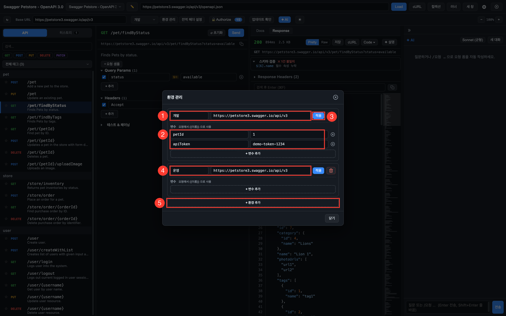
{{petId}}, {{apiToken}}처럼 참조합니다.{{이름}} 형태로 사용합니다.{{를 입력하면 자동완성 목록이 떠서 변수를 고를 수 있습니다.{{변수}} 위에 마우스를 올리면 툴팁으로 출처(환경/체이닝/동적)와
실제 치환 값이 표시됩니다.매번 바뀌는 값이 필요할 때는 내장 동적 변수를 사용합니다.
| 변수 | 값 |
|---|---|
{{$timestamp}} | 현재 Unix 타임스탬프(초) |
{{$isoTimestamp}} | ISO 8601 형식 현재 시각 |
{{$guid}} / {{$randomUUID}} | 랜덤 UUID |
{{$randomInt}} | 랜덤 정수 |
요청 편집기의 테스트 & 체이닝 섹션(5장 6)에서 설정합니다.
$.accessToken → {{accessToken}} 변수로 저장 → 다음 요청 헤더에서 사용.보낸 요청은 응답과 함께 히스토리에 자동 저장됩니다. 사이드바의 히스토리 탭에서 확인하세요.
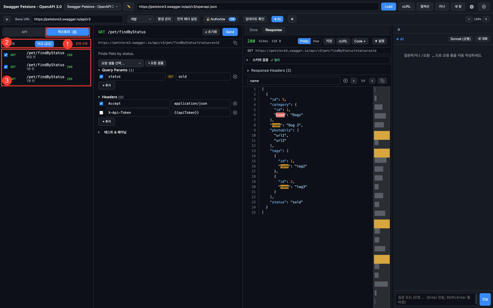
“같은 API인데 왜 결과가 다르지?”를 확인할 때 사용합니다. 히스토리에서 2건을 선택하고 비교를 누르세요.
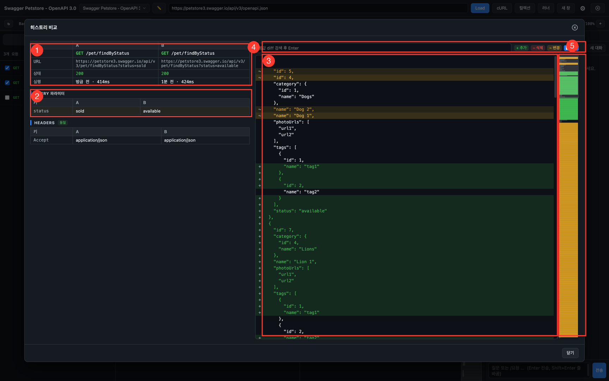
자주 쓰는 요청은 컬렉션으로 저장해 두세요. 스펙과 무관하게 보관되며, Postman 컬렉션도 가져올 수 있습니다.
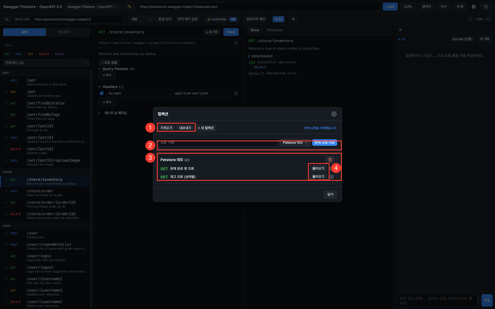
상단바 러너(6)로 컬렉션의 요청을 한 번에 실행하고 결과를 확인합니다. 스모크 테스트나 회귀 확인에 유용합니다.
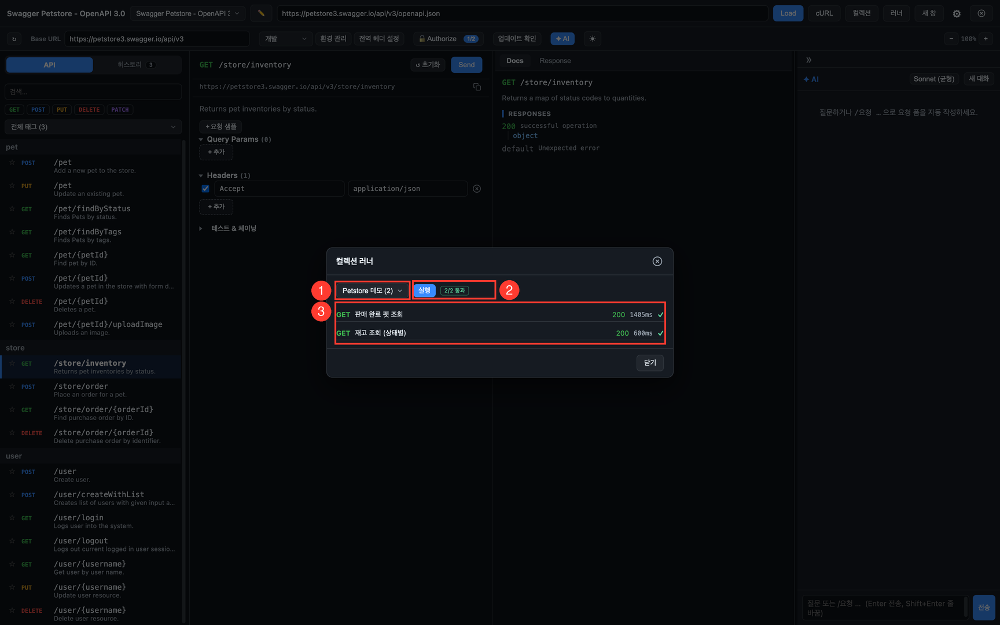
SwaggerMan의 핵심 기능입니다. 우측 ✦ AI 패널에서,
지금 보고 있는 엔드포인트를 컨텍스트로 로컬 claude CLI와 한국어로 대화합니다.
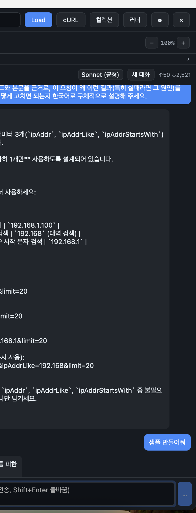
/요청 …으로 자연어 지시를 하면
AI가 path·query·headers·body를 제안합니다./요청 판매중인 펫 목록을 조회해줘
/요청 사용자 ID가 42인 회원 정보를 조회해줘AI는 요청 폼을 채워줄 뿐, 실제 전송은 사용자가 직접 ⌘Enter 또는 Send로 합니다. 의도치 않은 호출을 막기 위한 안전 장치입니다.
요청을 보낸 뒤 Response 탭의 ✦ 설명 버튼(6장 2)을 누르면 응답 본문을 한국어로 해설해 줍니다. 4xx/5xx 오류면 원인과 해결 방향을 진단합니다. 커맨드 팔레트(⌘K)에서 “AI: 응답 설명/진단”으로도 실행할 수 있습니다.
대화는 프로젝트별로 자동 저장되어 앱을 재시작해도 복원됩니다.
보안 — 비밀 값은 AI에 전달되지 않습니다.
환경 변수의 값은 AI로 전송되지 않으며, 이름만 컨텍스트로 제공됩니다. 토큰·비밀번호 같은 민감 정보가 모델에 노출되지 않도록 설계되었습니다.
사전 조건 — 로컬 claude CLI 설치가 필요합니다.
AI 기능은 사용자의 컴퓨터에 설치된 claude CLI를 호출합니다. 앱은
시스템 PATH와 함께 ~/.local/bin, /opt/homebrew/bin
(Windows: %USERPROFILE%\.local\bin, %APPDATA%\npm)
같은 일반적인 위치를 자동으로 탐지합니다. CLI를 찾지 못하면 AI 패널에 설치 안내가 표시됩니다.
macOS / Linux
curl -fsSL https://claude.ai/install.sh | bash
claude # 최초 1회 로그인Windows (PowerShell)
irm https://claude.ai/install.ps1 | iex
claude # 최초 1회 로그인설치 후 SwaggerMan을 재시작하면 자동으로 claude를 찾습니다.
자동 탐지가 안 될 때: 설정(⚙) → “claude 실행파일 경로”에
경로를 직접 입력하세요. (예: macOS ~/.local/bin/claude,
Windows C:\Users\<이름>\.local\bin\claude.exe)
상단바 전역 헤더 설정(3장 11)에서 등록한 헤더는 이 프로젝트의 모든 요청에 자동으로 붙습니다. 공통 인증 키, 추적용 헤더 등에 사용하세요. 요청 편집기에는 읽기 전용으로 표시되어 어떤 헤더가 함께 나가는지 확인할 수 있습니다.
서버가 내려준 쿠키(Set-Cookie)는 쿠키 저장소에 자동 보관되어
같은 호스트로 가는 다음 요청에 자동으로 첨부됩니다(브라우저처럼 동작).
세션 로그인이 필요한 API 테스트에 유용합니다.
상단바의 ⚙ 설정(3장 8)에서 네트워크·AI·쿠키를 관리합니다.
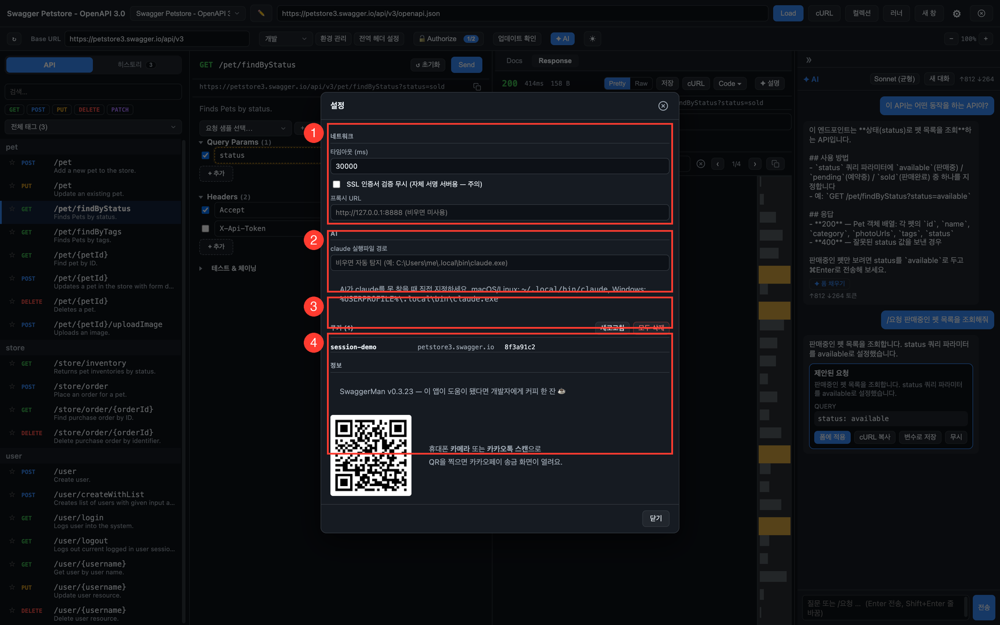
SwaggerMan은 시작할 때 새 버전을 자동으로 확인합니다. 업데이트가 있으면 알림이 표시되고, 동의하면 자동으로 내려받아 설치한 뒤 재시작으로 최신 버전을 적용합니다. 상단바의 업데이트 확인 버튼으로 수동 확인도 가능합니다.
사내망(프록시 필요) 환경에서 “업데이트 확인 실패”가 뜨면 — 설정(⚙) → 네트워크 → 프록시 URL을 지정한 뒤 다시 확인하세요. 자동 확인이 실패하면 그 사유가 화면에 표시됩니다.
| 단축키 | 동작 |
|---|---|
| ⌘K | 커맨드 팔레트 — 오퍼레이션·저장 요청 검색, AI 설명/진단 등 명령 실행 |
| ⌘Enter | 현재 요청 전송 (Send) |
| ⌘F | 응답 본문 검색에 포커스 |
| ⌘N | 새 창 열기 (멀티윈도우) |
| ⌘⇧P | 전역 단축키 — 다른 앱에서도 SwaggerMan을 불러내 커맨드 팔레트 열기 (설정에서 변경 가능) |
| ESC | 열려 있는 모달 닫기 |
| ⌘+ / ⌘− / ⌘0 | 화면 확대 / 축소 / 초기화 |
Windows에서는 ⌘ 대신 Ctrl을 사용합니다.
로드한 스펙으로 로컬 가짜 API 서버를 띄워, 백엔드 없이 프론트엔드를 개발할 수 있습니다.
상단바 Mock 버튼으로 엽니다. 외부 클라이언트(브라우저·앱·curl)가 http://localhost:9090으로 직접 호출합니다.
page/size·offset/limit 페이징 자동, 응답 지연 시뮬레이션, CORS 허용.실제 API 호출을 녹화해 곧바로 Mock으로 저장합니다. 상단바 프록시 버튼으로 모달을 열고, 위쪽에서 프록시 / 브라우저 두 모드를 전환합니다.
실서버 앞에 로컬 프록시(localhost:9091)를 두고 트래픽을 투명 포워딩하면서 요청/응답을 자동 녹화합니다.
localhost:9091로 향하게 하면 실서버로 전달되며 녹화됩니다. 설정(⚙)의 SSL 검증 끄기·프록시·타임아웃이 포워딩에도 적용돼 사내망(사설 CA) https 타깃도 녹화됩니다.Okta 같은 OAuth/SSO 로그인은 인증이 끝나면 브라우저가 실제 서비스 호스트로 리다이렉트되어 프록시를 벗어납니다. 그래서 프록시 모드로는 로그인 뒤 트래픽을 잡을 수 없습니다. 브라우저 모드는 앱이 전용 Chrome 창을 띄워 그 브라우저 안의 API 호출(XHR/fetch)을 직접 녹화하므로, 로그인 중 호스트가 몇 번 바뀌어도 끝까지 따라가며 잡습니다.
정적 리소스·문서 이동은 빼고 API 호출(XHR/fetch)만 녹화합니다. 현재(v1)는 첫 탭만 캡처하므로, 로그인이 별도 팝업창으로 뜨는 방식의 SSO는 지원하지 않습니다(대부분의 OIDC는 같은 탭 리다이렉트라 문제없습니다).
상단바 성능 버튼 — 히스토리에 쌓인 응답시간을 operation별로 집계해 보여줍니다.
상단바 시간여행 버튼 — 선택한 API의 응답을 주기적으로 스냅샷 저장하고 과거를 탐색합니다. "어제 이 API가 뭘 반환했지?", "장애 전후 응답이 어떻게 바뀌었지?"를 추적할 때 씁니다.
상단바 가이드 버튼 — 선택한 API들의 스펙(파라미터)과 히스토리의 실제 요청/응답 예시를 묶어
Markdown 연동 가이드를 만듭니다. 복사하거나 .md 파일로 저장해 동료에게 전달하세요.
요청 예시는 cURL로, 토큰 같은 민감 헤더는 자동 제외됩니다.
상단바 플로우 버튼 — API 단계를 세로로 나열해 순차 실행하는 시나리오를 만듭니다 (로그인 → 토큰 추출 → 생성 → 검증).
{{변수}}를 추출하면 다음 단계 요청에 자동으로 채워집니다. 단계별 상태/값 검증(어서션)도 가능합니다.요청 화면 상단 📝 메모에 API별 메모와 상태(⚠️ Deprecated / 🔍 검토중 / ✅ 안정 / 🚫 사용금지)를 남깁니다. 사이드바에 상태 색상 점과 메모 아이콘으로 표시됩니다. 로컬에 저장됩니다.
상단바 공유 버튼 — 현재 요청을 압축 코드(swaggerman:req:…)로 복사해 동료에게 전달하고,
받는 쪽은 "가져오기"에 붙여넣어 적용합니다. 서버 없이 동작하며, 토큰·비밀번호 등 민감 헤더는 기본 제외됩니다.
상단바 권한 버튼 — 토큰 여러 개(관리자·일반·게스트 등)로 선택한 API들을 호출해 권한별 접근 가능 여부를 상태코드 표로 비교합니다. 401·403은 주황으로 강조됩니다. GET이 기본 선택되며, 쓰기 요청(POST/PUT/DELETE)을 포함하면 실행 전 경고가 뜹니다.
AI 기능은 로컬 claude CLI가 있어야 동작합니다. 다음을 확인하세요.
claude --version이 정상 실행되는지 확인PATH, ~/.local/bin, /opt/homebrew/bin
중 한 곳에 있는지 확인아니요. 환경 변수의 값은 AI에 전달되지 않으며, 이름만 컨텍스트로 제공됩니다.
아니요. AI는 폼을 채워줄 뿐이며, 실제 전송은 사용자가 ⌘Enter 또는 Send로 직접 합니다.
Finder에서 SwaggerMan 아이콘을 우클릭 → 열기 후 다시
열기를 누르면 됩니다. 안 되면 터미널에서
xattr -dr com.apple.quarantine /Applications/SwaggerMan.app을 실행하세요.
URL이 올바른 OpenAPI(JSON/YAML) 스펙을 가리키는지, 네트워크 접근이 가능한지 확인하세요. 사내 CA·자체 서명 인증서 서버라면 설정(⚙) → SSL 인증서 검증 무시를 켠 뒤 다시 시도하세요.
요청 샘플은 한 API 안에서 Query·Headers·Body 묶음을 여러 세트로 보관하고 전환하는 기능입니다(예: 같은 API의 정상 케이스/에러 케이스). 컬렉션은 여러 API의 요청을 모아 두고 일괄 실행(러너)하거나 Postman과 주고받는 보관함입니다.
파라미터·헤더·Body 입력값은 API별로 자동 저장되어 재시작 후 복원됩니다. 응답 본문은 복원되지 않지만, 히스토리에서 과거 요청·응답을 다시 볼 수 있습니다.
설정(⚙) → 네트워크 → 프록시 URL을 지정한 뒤 다시 시도하세요. 프록시 설정은 스펙 로드·요청 실행·업데이트 확인에 모두 적용됩니다.
AI 대화는 프로젝트별로 자동 저장·복원됩니다. “새 대화”를 눌렀거나 다른 프로젝트로 전환하면 해당 프로젝트의 히스토리가 표시됩니다.